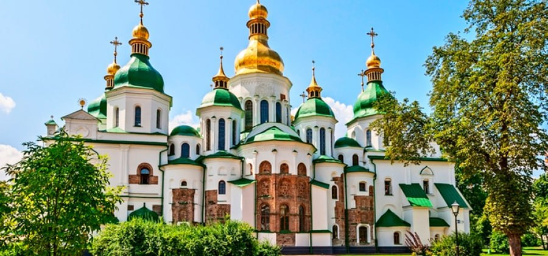
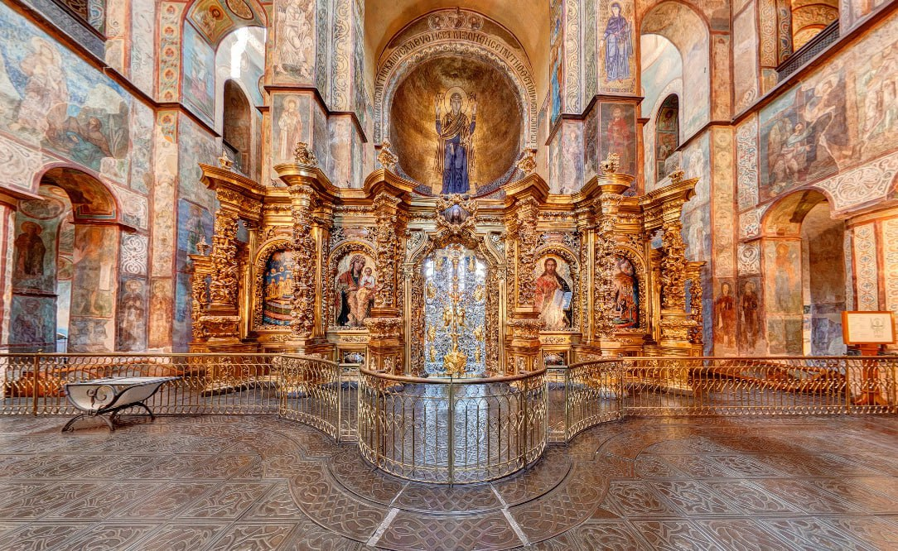
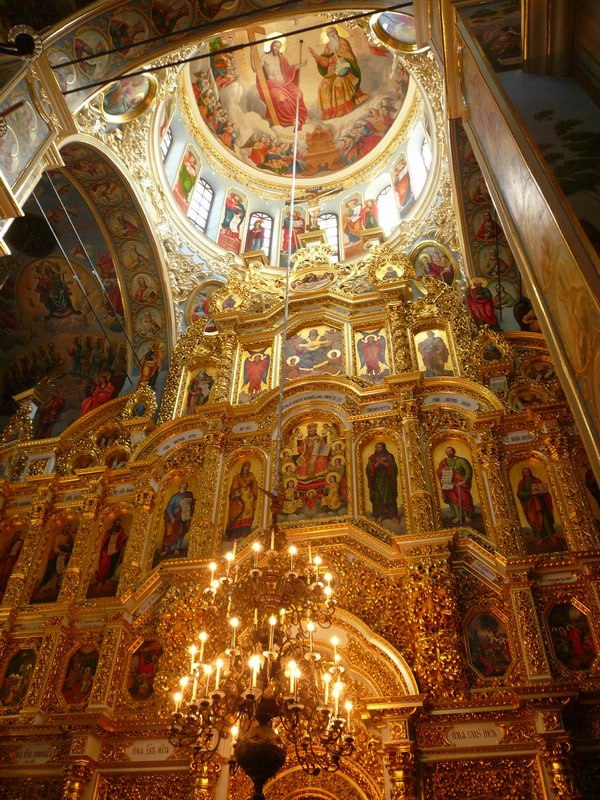
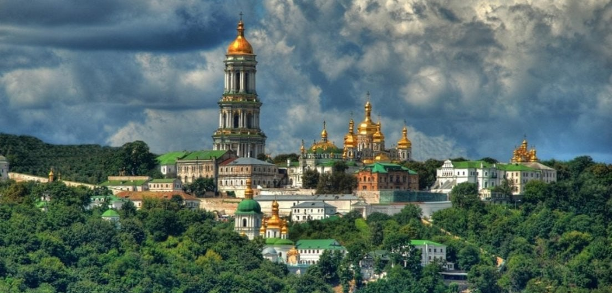

Софійський собор у Києві Шедевр давньоруської архітектури XI століття. Центр духовного життя Київської Русі, внесений до спадщини ЮНЕСКО.
У серці Києва стоїть, мов диво,Софійський храм — святиня величава.Його стіни — літопис нашої сили,Где слава предків живе й досі жива.Збудований в часи Ярослава Мудрого,Цей храм — немов скарб душі української.Мозаїки сяють, мов зорі у ночі,Це чудо — оберіг крізь віки і очі.
Історико-культурні пам’ятки
Києво-Печерська лавра Монастирський комплекс, заснований у 1051 році. Відомий своїми печерами, храмами та впливом на розвиток православ’я.

